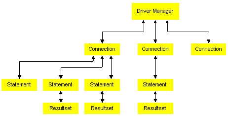

Using the JDBC (java.sql) Interfaces

Figure 3 - JDBC Interfaces
The JDBC API is a set of Java interfaces that allow database applications
to open connections to a database, execute SQL statements, and process
the results. These include:
-
java.sql.DriverManager, which loads the specific drivers and supports
creating new database connections
-
java.sql.Connection, which represents a connection to a specific
database
-
java.sql.Statement, which allows the application to execute a SQL
statement
-
java.sql.PreparedStatement, which represents a pre-compiled SQL
statement
-
java.sql.CallableStatement, which represents a call to a stored
procedure in the database
-
java.sql.ResultSet, which controls access to the rows resulting
from a statement execution
The DriverManager Class
The DriverManager class is part of the java.sql package.
The JDBC framework supports multiple database drivers. The DriverManager
manages all JDBC drivers that are loaded on a system; it tries to load
as many drivers as it can find. For each connection request, it locates
a driver to connect to the target database URL. The DriverManager also
enforces security measures defined by the JDBC specification.
The Driver Class
Each database driver must provide a class that implements the java.sql.Driver
interface. The interbase.interclient.Driver class is an all-Java
implementation of a JDBC driver that is specific to InterBase. The interbase.interclient
package supports most of the JDBC classes and methods plus some added
extensions that are not part of the JDBC API.
To access an InterBase database, the InterClient driver communicates
via a TCP/IP connection with an InterServer process that runs on the same
system as the InterBase database server. InterServer forwards InterClient
requests to the InterBase server. InterBase processes the SQL statements
and passes the results back to the InterServer, which then passes the results
to the InterClient driver.
Multi-threading
Any JDBC driver must comply with the JDBC standard for multi-threading,
which requires that all operations on Java objects be able to handle concurrent
execution. For a given connection, several threads must be able to safely
operate simultaneously. The InterClient driver is "thread-safe." For example,
your application can execute two or more statements over the same connection
concurrently, and process both result sets concurrently without generating
errors or ambiguous results.
The Connection Class
After creating a Driver object, you can open a connection to the
database by creating a Connection object. A database driver can
manage many connection objects. The Connection object establishes
and manages the connection to your particular database. Within a given
connection, you can execute SQL statements and receive the result sets.
The java.sql.Connection interface represents a connection to
a particular database. The JDBC specification allows a single application
to support multiple connections to one or more databases, using one or
more database drivers. When you establish your connection using this class,
the DriverManager selects an appropriate driver from those loaded based
on the subprotocol specified in the URL, which is passed as a connection
parameter.
Send comments or suggestions to interclient@interbase.com